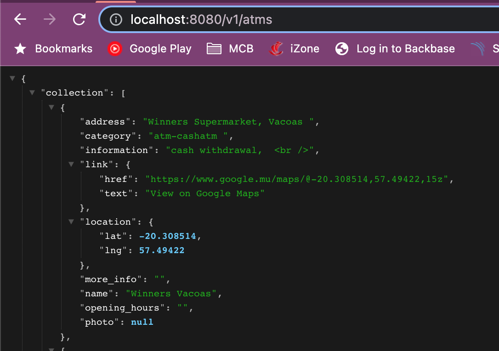
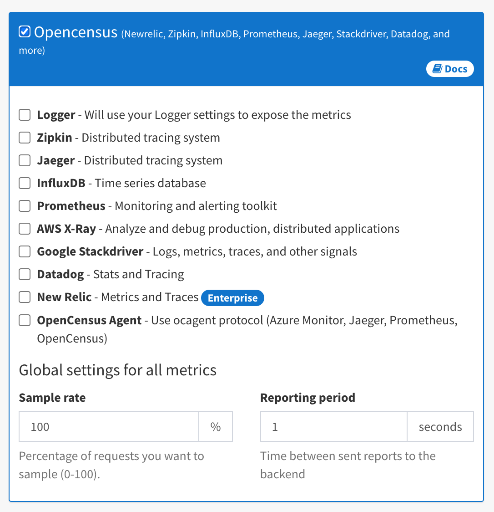
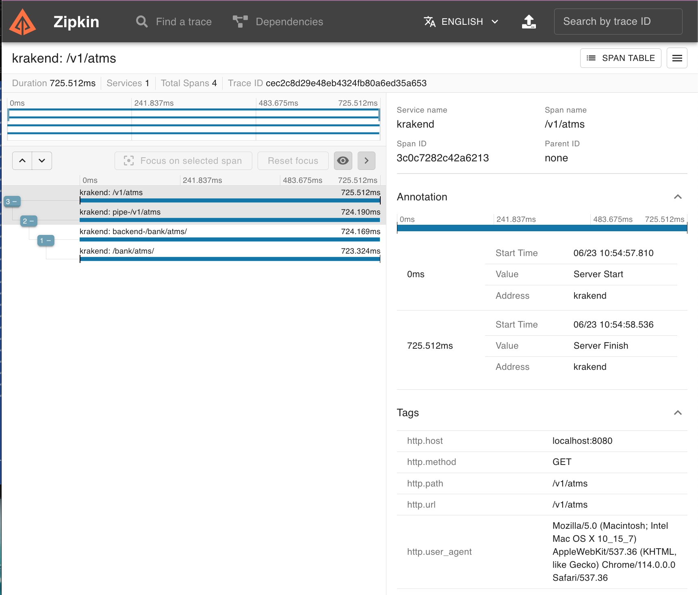

<!DOCTYPE html>


<html lang="en">
  

    <head>
      <meta charset="utf-8" />
       
      <meta name="keywords" content="agile, tdd, software engineering" />
       
      <meta
        name="viewport"
        content="width=device-width, initial-scale=1, maximum-scale=1"
      />
      <title>Release the KrakenD. Part 1 - Metrics |  nick dot blog</title>
  <meta name="generator" content="hexo-theme-ayer">
      
      <link rel="shortcut icon" href="/favicon.ico" />
       
<link rel="stylesheet" href="/dist/main.css">

      
<link rel="stylesheet" href="/css/fonts/remixicon.css">

      
<link rel="stylesheet" href="/css/custom.css">
 
      <script src="https://cdn.staticfile.org/pace/1.2.4/pace.min.js"></script>
       
<!-- Global site tag (gtag.js) - Google Analytics -->
<script async src="https://www.googletagmanager.com/gtag/js?id=G-KXJW9BVBJ4"></script>
<script>
  window.dataLayer = window.dataLayer || [];
  function gtag(){dataLayer.push(arguments);}
  gtag('js', new Date());
  gtag('config', 'G-KXJW9BVBJ4');
</script>

 

      <link
        rel="stylesheet"
        href="https://cdn.jsdelivr.net/npm/@sweetalert2/theme-bulma@5.0.1/bulma.min.css"
      />
      <script src="https://cdn.jsdelivr.net/npm/sweetalert2@11.0.19/dist/sweetalert2.min.js"></script>

      <!-- mermaid -->
      
      <style>
        .swal2-styled.swal2-confirm {
          font-size: 1.6rem;
        }
      </style>
    <link rel="alternate" href="/atom.xml" title="nick dot blog" type="application/atom+xml">
</head>
  </html>
</html>


<body>
  <div id="app">
    
      
    <main class="content on">
      <section class="outer">
  <article
  id="post-release-the-krakend"
  class="article article-type-post"
  itemscope
  itemprop="blogPost"
  data-scroll-reveal
>
  <div class="article-inner">
    
    <header class="article-header">
       
<h1 class="article-title sea-center" style="border-left:0" itemprop="name">
  Release the KrakenD. Part 1 - Metrics
</h1>
 

      
    </header>
     
    <div class="article-meta">
      <a href="/2023/06/23/release-the-krakend/" class="article-date">
  <time datetime="2023-06-23T08:39:31.000Z" itemprop="datePublished">2023-06-23</time>
</a> 
  <div class="article-category">
    <a class="article-category-link" href="/categories/Release-The-KrakenD/">Release The KrakenD</a>
  </div>
  
<div class="word_count">
    <span class="post-time">
        <span class="post-meta-item-icon">
            <i class="ri-quill-pen-line"></i>
            <span class="post-meta-item-text"> Word count:</span>
            <span class="post-count">698</span>
        </span>
    </span>

    <span class="post-time">
        &nbsp; | &nbsp;
        <span class="post-meta-item-icon">
            <i class="ri-book-open-line"></i>
            <span class="post-meta-item-text"> Reading time≈</span>
            <span class="post-count">4 min</span>
        </span>
    </span>
</div>
 
    </div>
      
    <div class="tocbot"></div>


  
    <div class="article-entry" itemprop="articleBody">
       
  

<p>We are currently looking for a API Gateway. Ideally I’d like something that is Open Source, DevOps friendly and has first class support for OpenApi in addition to its general API Gateway features. Today I’m playing with the excellently named <a target="_blank" rel="noopener" href="https://www.krakend.io/">KrakenD</a>…</p>
<h1 id="The-Scenario"><a href="#The-Scenario" class="headerlink" title="The Scenario"></a>The Scenario</h1><p>To put KrakenD through its paces I’ve got a simple API created in Node that uses JWT for authentication. I’m going to use KrakenD to see how I can add Logging, Metrics, Security and Request&#x2F;Response modification. This will most likely be too much for one post so I’ll split these into a series.</p>
<h1 id="Running-KrakenD-locally"><a href="#Running-KrakenD-locally" class="headerlink" title="Running KrakenD locally"></a>Running KrakenD locally</h1><p>I’m running KrakenD on my local machine via Docker. Here’s the command:</p>
<figure class="highlight plaintext"><table><tr><td class="gutter"><pre><span class="line">1</span><br></pre></td><td class="code"><pre><span class="line">docker run -p 8080:8080 -v $PWD:/etc/krakend/ devopsfaith/krakend run --config /etc/krakend/krakend.json</span><br></pre></td></tr></table></figure>

<p>Before doing this though you’ll need to create a krakend.json file.</p>
<h1 id="Basic-Setup"><a href="#Basic-Setup" class="headerlink" title="Basic Setup"></a>Basic Setup</h1><p>KrakenD uses a single json file for its configuration. You can create this manually or via the <a target="_blank" rel="noopener" href="https://designer.krakend.io/#!/">designer</a>.</p>
<p>Here’s my initial setup:</p>
<figure class="highlight plaintext"><table><tr><td class="gutter"><pre><span class="line">1</span><br><span class="line">2</span><br><span class="line">3</span><br><span class="line">4</span><br><span class="line">5</span><br><span class="line">6</span><br><span class="line">7</span><br><span class="line">8</span><br><span class="line">9</span><br><span class="line">10</span><br><span class="line">11</span><br><span class="line">12</span><br><span class="line">13</span><br><span class="line">14</span><br><span class="line">15</span><br><span class="line">16</span><br><span class="line">17</span><br><span class="line">18</span><br><span class="line">19</span><br><span class="line">20</span><br><span class="line">21</span><br><span class="line">22</span><br><span class="line">23</span><br><span class="line">24</span><br><span class="line">25</span><br><span class="line">26</span><br><span class="line">27</span><br><span class="line">28</span><br><span class="line">29</span><br><span class="line">30</span><br></pre></td><td class="code"><pre><span class="line">&#123;</span><br><span class="line">  &quot;$schema&quot;: &quot;https://www.krakend.io/schema/v3.json&quot;,</span><br><span class="line">  &quot;version&quot;: 3,</span><br><span class="line">  &quot;name&quot;: &quot;KrakenD - API Gateway&quot;,</span><br><span class="line">  &quot;extra_config&quot;: &#123;</span><br><span class="line">  &#125;,</span><br><span class="line">  &quot;timeout&quot;: &quot;3000ms&quot;,</span><br><span class="line">  &quot;cache_ttl&quot;: &quot;300s&quot;,</span><br><span class="line">  &quot;output_encoding&quot;: &quot;json&quot;,</span><br><span class="line">  &quot;endpoints&quot;: [</span><br><span class="line">    &#123;</span><br><span class="line">      &quot;endpoint&quot;: &quot;/v1/atms&quot;,</span><br><span class="line">      &quot;method&quot;: &quot;GET&quot;,</span><br><span class="line">      &quot;output_encoding&quot;: &quot;json&quot;,</span><br><span class="line">      &quot;backend&quot;: [</span><br><span class="line">        &#123;</span><br><span class="line">          &quot;url_pattern&quot;: &quot;/bank/atms/&quot;,</span><br><span class="line">          &quot;encoding&quot;: &quot;json&quot;,</span><br><span class="line">          &quot;sd&quot;: &quot;static&quot;,</span><br><span class="line">          &quot;method&quot;: &quot;GET&quot;,</span><br><span class="line">          &quot;is_collection&quot;: true,</span><br><span class="line">          &quot;host&quot;: [</span><br><span class="line">            &quot;https://foo.azurewebsites.net&quot;</span><br><span class="line">          ],</span><br><span class="line">          &quot;disable_host_sanitize&quot;: false</span><br><span class="line">        &#125;</span><br><span class="line">      ]</span><br><span class="line">    &#125;</span><br><span class="line">  ]</span><br><span class="line">&#125;</span><br></pre></td></tr></table></figure>

<blockquote>
<p>Note the ‘is_collection’ flag - this is required when the service returns an array. If not present you would receive an error ‘json: cannot unmarshall array into Go value of type map[string]interface {}’.</p>
</blockquote>
<p>This is setting up KrakenD to act as a gateway for my Bank Api running in Azure. To test this I hit ‘<a target="_blank" rel="noopener" href="http://localhost/v1/atms">http://localhost/v1/atms</a>‘ and I should see the result from ‘<a target="_blank" rel="noopener" href="https://foo.azurewebsites.net/bank/atms">https://foo.azurewebsites.net/bank/atms</a>‘.</p>



<h1 id="Metrics"><a href="#Metrics" class="headerlink" title="Metrics"></a>Metrics</h1><p>To configure KrakenD to collect metrics you add the following to the extra_config section.</p>
<figure class="highlight plaintext"><table><tr><td class="gutter"><pre><span class="line">1</span><br><span class="line">2</span><br><span class="line">3</span><br><span class="line">4</span><br><span class="line">5</span><br><span class="line">6</span><br><span class="line">7</span><br><span class="line">8</span><br><span class="line">9</span><br><span class="line">10</span><br></pre></td><td class="code"><pre><span class="line">&quot;extra_config&quot;: &#123;</span><br><span class="line">  &quot;telemetry/metrics&quot;: &#123;</span><br><span class="line">    &quot;collection_time&quot;: &quot;60s&quot;,</span><br><span class="line">    &quot;proxy_disabled&quot;: false,</span><br><span class="line">    &quot;router_disabled&quot;: false,</span><br><span class="line">    &quot;backend_disabled&quot;: false,</span><br><span class="line">    &quot;endpoint_disabled&quot;: false,</span><br><span class="line">    &quot;listen_address&quot;: &quot;:8090&quot;</span><br><span class="line">  &#125;</span><br><span class="line">&#125;,</span><br></pre></td></tr></table></figure>

<p>  The metrics can then be accessed via the port specified by the listen_address parameter. Hitting <a target="_blank" rel="noopener" href="http://localhost:8090/__stats">http://localhost:8090/__stats</a> results in:</p>
  <figure class="highlight plaintext"><table><tr><td class="gutter"><pre><span class="line">1</span><br><span class="line">2</span><br><span class="line">3</span><br><span class="line">4</span><br><span class="line">5</span><br><span class="line">6</span><br><span class="line">7</span><br><span class="line">8</span><br><span class="line">9</span><br><span class="line">10</span><br></pre></td><td class="code"><pre><span class="line">  &#123;</span><br><span class="line">&quot;cmdline&quot;: [</span><br><span class="line">&quot;krakend&quot;,</span><br><span class="line">&quot;run&quot;,</span><br><span class="line">&quot;--config&quot;,</span><br><span class="line">&quot;/etc/krakend/krakend.json&quot;</span><br><span class="line">],</span><br><span class="line">&quot;krakend.proxy.latency.layer.backend.name./bank/atms/.complete.false.error.false.50-percentile&quot;: 0,</span><br><span class="line">&quot;krakend.proxy.latency.layer.backend.name./bank/atms/.complete.false.error.false.75-percentile&quot;: 0,</span><br><span class="line">&quot;krakend.proxy.latency.layer.backend.name./bank/atms/.complete.false.error.false.95-percentile&quot;: 0,</span><br></pre></td></tr></table></figure>

<p>You can consume these via the endpoint but KrakenD ships out of the box with <a target="_blank" rel="noopener" href="https://opencensus.io/">Opencensus</a> support.</p>


<p>To configure Zipkin for example just add the following to extra_config:</p>
<figure class="highlight plaintext"><table><tr><td class="gutter"><pre><span class="line">1</span><br><span class="line">2</span><br><span class="line">3</span><br><span class="line">4</span><br><span class="line">5</span><br><span class="line">6</span><br><span class="line">7</span><br><span class="line">8</span><br><span class="line">9</span><br><span class="line">10</span><br></pre></td><td class="code"><pre><span class="line">&quot;telemetry/opencensus&quot;: &#123;</span><br><span class="line">  &quot;sample_rate&quot;: 100,</span><br><span class="line">  &quot;reporting_period&quot;: 0,</span><br><span class="line">  &quot;exporters&quot;: &#123;</span><br><span class="line">    &quot;zipkin&quot;: &#123;</span><br><span class="line">      &quot;collector_url&quot;: &quot;http://192.168.68.113:9411/api/v2/spans&quot;,</span><br><span class="line">      &quot;service_name&quot;: &quot;krakend&quot;</span><br><span class="line">    &#125;</span><br><span class="line">  &#125;</span><br><span class="line">&#125;</span><br></pre></td></tr></table></figure>

<p>You can then view your traces in Zipkin:<br></p>
<h1 id="Next-Steps"><a href="#Next-Steps" class="headerlink" title="Next Steps"></a>Next Steps</h1><p>So far KrakenD has been a well-behaved sea monster. Set-up was easy and the documentation is clear. The Designer is really cool as it helps you create a mental model of how the json config is structured but also helps you see what features are available without having to read all the docs. At this point I have a simple example working and logging and metrics configured so that I can see what’s happening. In the next article I’m going to play with JWT Token validation and see if I can get the wee beastie to validate our tokens for us.</p>
 
      <!-- reward -->
      
    </div>
    

    <!-- copyright -->
    
    <div class="declare">
      <ul class="post-copyright">
        <li>
          <i class="ri-copyright-line"></i>
          <strong>Copyright： </strong>
          
          Copyright is owned by the author. For commercial reprints, please contact the author for authorization. For non-commercial reprints, please indicate the source.
          
        </li>
      </ul>
    </div>
    
    <footer class="article-footer">
       
  <ul class="article-tag-list" itemprop="keywords"><li class="article-tag-list-item"><a class="article-tag-list-link" href="/tags/devops/" rel="tag">devops</a></li></ul>

    </footer>
  </div>

   
  <nav class="article-nav">
    
      <a href="/2023/07/01/adventures-in-facial-recognition/" class="article-nav-link">
        <strong class="article-nav-caption">Previous Post</strong>
        <div class="article-nav-title">
          
            eKYC with Azure Face API &amp; Cognitive Services
          
        </div>
      </a>
    
    
      <a href="/2023/06/21/how-I-hire/" class="article-nav-link">
        <strong class="article-nav-caption">Next Post</strong>
        <div class="article-nav-title">How I hire</div>
      </a>
    
  </nav>

  
   
<div class="gitalk" id="gitalk-container"></div>

<link rel="stylesheet" href="https://cdn.staticfile.org/gitalk/1.7.2/gitalk.min.css">


<script src="https://cdn.staticfile.org/gitalk/1.7.2/gitalk.min.js"></script>


<script src="https://cdn.staticfile.org/blueimp-md5/2.19.0/js/md5.min.js"></script>

<script type="text/javascript">
  var gitalk = new Gitalk({
    clientID: '8318211c28156a054b60',
    clientSecret: 'a3e7c2c22e61867951cbca3c52fbcc22f43dcfb8',
    repo: 'BlogComments',
    owner: 'nickmza',
    admin: ['nickmza'],
    // id: location.pathname,      // Ensure uniqueness and length less than 50
    id: md5(location.pathname),
    distractionFreeMode: false,  // Facebook-like distraction free mode
    pagerDirection: 'last'
  })

  gitalk.render('gitalk-container')
</script>

  
   
    <script src="https://cdn.staticfile.org/twikoo/1.4.18/twikoo.all.min.js"></script>
    <div id="twikoo" class="twikoo"></div>
    <script>
        twikoo.init({
            envId: ""
        })
    </script>
 
</article>

</section>
      <footer class="footer">
  <div class="outer">
    <ul>
      <li>
        Copyrights &copy;
        2015-2023
        <i class="ri-heart-fill heart_icon"></i> Nick Mckenzie
      </li>
    </ul>
    <ul>
      <li>
        
      </li>
    </ul>
    <ul>
      <li>
        
      </li>
    </ul>
    <ul>
      
    </ul>
    <ul>
      
    </ul>
    <ul>
      <li>
        <!-- cnzz统计 -->
        
        <script type="text/javascript" src='https://s9.cnzz.com/z_stat.php?id=1278069914&amp;web_id=1278069914'></script>
        
      </li>
    </ul>
  </div>
</footer>    
    </main>
    <div class="float_btns">
      <div class="totop" id="totop">
  <i class="ri-arrow-up-line"></i>
</div>

<div class="todark" id="todark">
  <i class="ri-moon-line"></i>
</div>

    </div>
    <aside class="sidebar on">
      <button class="navbar-toggle"></button>
<nav class="navbar">
  
  <div class="logo">
    <a href="/"></a>
  </div>
  
  <ul class="nav nav-main">
    
    <li class="nav-item">
      <a class="nav-item-link" href="/">Home</a>
    </li>
    
    <li class="nav-item">
      <a class="nav-item-link" href="/archives">Archives</a>
    </li>
    
    <li class="nav-item">
      <a class="nav-item-link" href="/categories">Categories</a>
    </li>
    
    <li class="nav-item">
      <a class="nav-item-link" href="/tags">Tags</a>
    </li>
    
    <li class="nav-item">
      <a class="nav-item-link" href="/Resources">Resources</a>
    </li>
    
    <li class="nav-item">
      <a class="nav-item-link" href="/about">About</a>
    </li>
    
  </ul>
</nav>
<nav class="navbar navbar-bottom">
  <ul class="nav">
    <li class="nav-item">
      
      <a class="nav-item-link nav-item-search"  title="Search">
        <i class="ri-search-line"></i>
      </a>
      
      
      <a class="nav-item-link" target="_blank" href="/atom.xml" title="RSS Feed">
        <i class="ri-rss-line"></i>
      </a>
      
    </li>
  </ul>
</nav>
<div class="search-form-wrap">
  <div class="local-search local-search-plugin">
  <input type="search" id="local-search-input" class="local-search-input" placeholder="Search...">
  <div id="local-search-result" class="local-search-result"></div>
</div>
</div>
    </aside>
    <div id="mask"></div>

<!-- #reward -->
<div id="reward">
  <span class="close"><i class="ri-close-line"></i></span>
  <p class="reward-p"><i class="ri-cup-line"></i>请我喝杯咖啡吧~</p>
  <div class="reward-box">
    
    <div class="reward-item">
      
      <span class="reward-type">支付宝</span>
    </div>
    
    
    <div class="reward-item">
      
      <span class="reward-type">微信</span>
    </div>
    
  </div>
</div>
    
<script src="/js/jquery-3.6.0.min.js"></script>
 
<script src="/js/lazyload.min.js"></script>

<!-- Tocbot -->
 
<script src="/js/tocbot.min.js"></script>

<script>
  tocbot.init({
    tocSelector: ".tocbot",
    contentSelector: ".article-entry",
    headingSelector: "h1, h2, h3, h4, h5, h6",
    hasInnerContainers: true,
    scrollSmooth: true,
    scrollContainer: "main",
    positionFixedSelector: ".tocbot",
    positionFixedClass: "is-position-fixed",
    fixedSidebarOffset: "auto",
  });
</script>

<script src="https://cdn.staticfile.org/jquery-modal/0.9.2/jquery.modal.min.js"></script>
<link
  rel="stylesheet"
  href="https://cdn.staticfile.org/jquery-modal/0.9.2/jquery.modal.min.css"
/>
<script src="https://cdn.staticfile.org/justifiedGallery/3.8.1/js/jquery.justifiedGallery.min.js"></script>

<script src="/dist/main.js"></script>

<!-- ImageViewer -->
 <!-- Root element of PhotoSwipe. Must have class pswp. -->
<div class="pswp" tabindex="-1" role="dialog" aria-hidden="true">

    <!-- Background of PhotoSwipe. 
         It's a separate element as animating opacity is faster than rgba(). -->
    <div class="pswp__bg"></div>

    <!-- Slides wrapper with overflow:hidden. -->
    <div class="pswp__scroll-wrap">

        <!-- Container that holds slides. 
            PhotoSwipe keeps only 3 of them in the DOM to save memory.
            Don't modify these 3 pswp__item elements, data is added later on. -->
        <div class="pswp__container">
            <div class="pswp__item"></div>
            <div class="pswp__item"></div>
            <div class="pswp__item"></div>
        </div>

        <!-- Default (PhotoSwipeUI_Default) interface on top of sliding area. Can be changed. -->
        <div class="pswp__ui pswp__ui--hidden">

            <div class="pswp__top-bar">

                <!--  Controls are self-explanatory. Order can be changed. -->

                <div class="pswp__counter"></div>

                <button class="pswp__button pswp__button--close" title="Close (Esc)"></button>

                <button class="pswp__button pswp__button--share" style="display:none" title="Share"></button>

                <button class="pswp__button pswp__button--fs" title="Toggle fullscreen"></button>

                <button class="pswp__button pswp__button--zoom" title="Zoom in/out"></button>

                <!-- Preloader demo http://codepen.io/dimsemenov/pen/yyBWoR -->
                <!-- element will get class pswp__preloader--active when preloader is running -->
                <div class="pswp__preloader">
                    <div class="pswp__preloader__icn">
                        <div class="pswp__preloader__cut">
                            <div class="pswp__preloader__donut"></div>
                        </div>
                    </div>
                </div>
            </div>

            <div class="pswp__share-modal pswp__share-modal--hidden pswp__single-tap">
                <div class="pswp__share-tooltip"></div>
            </div>

            <button class="pswp__button pswp__button--arrow--left" title="Previous (arrow left)">
            </button>

            <button class="pswp__button pswp__button--arrow--right" title="Next (arrow right)">
            </button>

            <div class="pswp__caption">
                <div class="pswp__caption__center"></div>
            </div>

        </div>

    </div>

</div>

<link rel="stylesheet" href="https://cdn.staticfile.org/photoswipe/4.1.3/photoswipe.min.css">
<link rel="stylesheet" href="https://cdn.staticfile.org/photoswipe/4.1.3/default-skin/default-skin.min.css">
<script src="https://cdn.staticfile.org/photoswipe/4.1.3/photoswipe.min.js"></script>
<script src="https://cdn.staticfile.org/photoswipe/4.1.3/photoswipe-ui-default.min.js"></script>

<script>
    function viewer_init() {
        let pswpElement = document.querySelectorAll('.pswp')[0];
        let $imgArr = document.querySelectorAll(('.article-entry img:not(.reward-img)'))

        $imgArr.forEach(($em, i) => {
            $em.onclick = () => {
                // slider展开状态
                // todo: 这样不好，后面改成状态
                if (document.querySelector('.left-col.show')) return
                let items = []
                $imgArr.forEach(($em2, i2) => {
                    let img = $em2.getAttribute('data-idx', i2)
                    let src = $em2.getAttribute('data-target') || $em2.getAttribute('src')
                    let title = $em2.getAttribute('alt')
                    // 获得原图尺寸
                    const image = new Image()
                    image.src = src
                    items.push({
                        src: src,
                        w: image.width || $em2.width,
                        h: image.height || $em2.height,
                        title: title
                    })
                })
                var gallery = new PhotoSwipe(pswpElement, PhotoSwipeUI_Default, items, {
                    index: parseInt(i)
                });
                gallery.init()
            }
        })
    }
    viewer_init()
</script> 
<!-- MathJax -->

<!-- Katex -->

<!-- busuanzi  -->

<!-- ClickLove -->

<!-- ClickBoom1 -->

<!-- ClickBoom2 -->

<!-- CodeCopy -->
 
<link rel="stylesheet" href="/css/clipboard.css">
 <script src="https://cdn.staticfile.org/clipboard.js/2.0.10/clipboard.min.js"></script>
<script>
  function wait(callback, seconds) {
    var timelag = null;
    timelag = window.setTimeout(callback, seconds);
  }
  !function (e, t, a) {
    var initCopyCode = function(){
      var copyHtml = '';
      copyHtml += '<button class="btn-copy" data-clipboard-snippet="">';
      copyHtml += '<i class="ri-file-copy-2-line"></i><span>COPY</span>';
      copyHtml += '</button>';
      $(".highlight .code pre").before(copyHtml);
      $(".article pre code").before(copyHtml);
      var clipboard = new ClipboardJS('.btn-copy', {
        target: function(trigger) {
          return trigger.nextElementSibling;
        }
      });
      clipboard.on('success', function(e) {
        let $btn = $(e.trigger);
        $btn.addClass('copied');
        let $icon = $($btn.find('i'));
        $icon.removeClass('ri-file-copy-2-line');
        $icon.addClass('ri-checkbox-circle-line');
        let $span = $($btn.find('span'));
        $span[0].innerText = 'COPIED';
        
        wait(function () { // 等待两秒钟后恢复
          $icon.removeClass('ri-checkbox-circle-line');
          $icon.addClass('ri-file-copy-2-line');
          $span[0].innerText = 'COPY';
        }, 2000);
      });
      clipboard.on('error', function(e) {
        e.clearSelection();
        let $btn = $(e.trigger);
        $btn.addClass('copy-failed');
        let $icon = $($btn.find('i'));
        $icon.removeClass('ri-file-copy-2-line');
        $icon.addClass('ri-time-line');
        let $span = $($btn.find('span'));
        $span[0].innerText = 'COPY FAILED';
        
        wait(function () { // 等待两秒钟后恢复
          $icon.removeClass('ri-time-line');
          $icon.addClass('ri-file-copy-2-line');
          $span[0].innerText = 'COPY';
        }, 2000);
      });
    }
    initCopyCode();
  }(window, document);
</script>
 
<!-- CanvasBackground -->

<script>
  if (window.mermaid) {
    mermaid.initialize({ theme: "forest" });
  }
</script>


    
    

  </div>
</body>

</html>